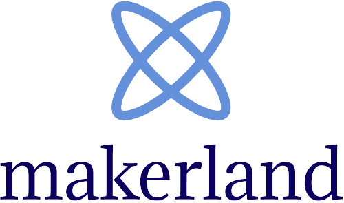

INTRODUCTION
Welcome to the future, where learning is making profit. Welcome to a world where education is based on decentralization and where every learner feels part of an enthusiastic global community.
Welcome to an online revolutionary ecosystem where individuals share their knowledge, apprehend futuristic technologies and employ them to create amazing projects.
Unfortunately, we are not yet in the future and this ideal educational environment is not currently available.
Going back to the present, the global e-learning market is worth a total of 180 billion dollars.
This number is expected to double by 2025, as a consequence of the increasing demand for online courses and institutions.
Despite these promising statistics and the positive trend of the education sector, today’s e-learning platforms are characterized by the presence of several weak points yet to be addressed.
These weaknesses include:
- Unqualified instructors
- Poor incentives and insufficient student motivation
- Lack of social presence
- Poor guidance in the learning process
- Vulnerability to cyber attacks
- Easy stealing of intellectual property
As a consequence of these inefficiencies, there is a high loss of value which is ultimately passed onto users. The resulting state of affairs is not ideal for the future growth and development of the online education and project-development industry.
Makerland’s online ecosystem represents the shift from today’s limited e-learning and project-building platforms to the open and flexible environments of tomorrow.
Makerland is the first e-learning ecosystem and knowledge-based social network built on the blockchain decentralized technology and tokenization.
Makerland’s goal is to create a fully engaging e-learning environment and to truly spread the benefits online education across society, by designing a social, incentivized and student-constructed learning platform.
Moreover, for what concerns the weak points of today’s e-learning websites, Makerland seeks to resolve them through the adoption of blockchain technology, the collaboration with businesses and universities, the creation of an interactive social network and the employment of artificial intelligence.
Makerland also aims to offer an environment where users are able to build and develop their coding-related ideas, coming from their motivations and learning experiences on the platform.

MARKET ANALYSIS: E-LEARNING AND MOOCs
The digital world has brought a lot of innovations to all businesses across the globe. Technological development has significantly affected the education sector, especially in the last few years. Today, it is almost undoubtable that the future of education lies in embracing e-learning and online resources.
In 2017, the global e-learning market was worth a total of 160 billion dollars. By 2025, its size is expected to double and to reach USD 325 billion. Currently, in 2021, the worldwide e-learning market has a value of approximately 220 billion dollars. A key factor driving the exponential growth of the market is certainly the flexibility and cost-effectiveness of online education.
E-learning enables people to study from home, which improves convenience and eliminates the need to spend on accommodation and transportation. Nowadays, thsi is more needed than ever, as we are facing a period of global pandemic.
An article on Forbes notes that traditional educational institutions will struggle with the current curriculum and training programs in the coming years. In fact, roughly half of the subject knowledge acquired during the first year of a four-year technical degree will likely be outdated by graduation.
According to Clayton Christensen, a Harvard Business School professor, half of all traditional colleges won’t exist in 10 years because online education will undermine their business models.
Unsurprisingly, in a world where change is constant, there is a perpetual need to learn new skills, acquire knowledge and gain qualifications that are relevant in today's technologically driven marketplace. In a thriving digital economy, the demand for professionals with both technical and analytical skills is stimulating job creation and generating competition amongst employers looking to secure valuable talent. In this world, online education represents the key to success. Courses on the web are cheaper and constantly kept up to date. In this way, students can view changes anytime and anywhere. Online education can act as nutrition for curious or talented minds, serve as support for students attending traditional institutions and completely replace some curricular programmes.
Nowadays, the largest and most valuable slice of the e-learning market is represented by platforms offering MOOCs (Massive Open Online Courses), which are online courses that are open to an unlimited number of students. Especially in the last few years, websites providing MOOCs have boomed and generated large communities of individuals willing to learn online. Compared to courses with a limited number of participants, MOOCs guarantee a significantly greater source of income. Therefore, they are vital for the growth, advancement and sustainability of the e-learning sector. Moreover, they contribute to making online education become more affordable, more enjoyable and more accessible. The following analysis takes into account the most popular and profitable MOOC platforms of 2020-21.
Description: Udemy.com is aimed at students and at professional adults.
Udemy serves as a platform that allows instructors to build online courses on topics of their choosing. Anyone can teach on Udemy.
Instructors can engage and interact with users via online discussion boards.
Courses are offered across a breadth of categories. Students and instructors come from 190+ countries and 2/3 of students are located outside of the U.S.
Udemy has more than 45,000 instructors and about 100,000 available courses.
In addition to this, the platform has over 4,000 enterprise customers, that trust Udemy for employee up-skilling.
Udemy earns in two ways: from enterprise subscriptions and from a business to consumer fee.
| Platform |
Users |
Revenue |
| Udemy |
40,000,000 |
30,000,000 |
| Platform |
Users |
Revenue |
| Coursera |
40,000,000 |
140,000,000 |
Description:
Coursera is an American online learning platform founded by the Stanford professors Andrew Ng and Daphne Koller, that offers massive open online courses (MOOCs) and a
few degrees. This analysis will only focus on MOOC. Coursera currently has about 1,000 courses and works with universities or other organizations to provide its online classes.
This guarantees high-quality courses and represents an advantage compared to other platforms in terms of resources and content-standards.
Coursera’s classes last approximately four to ten weeks, with a few hours of video lectures a week.
They also provide quizzes, weekly exercises, peer-graded assignments, and sometimes a final project or exam. Moreover, most of Coursera’s courses are free to follow and require a payment only to purchase the final certificate.
Purchasing a course certificate is optional and costs around 100 dollars.
Description:
edX is a massive open online course (MOOC) provider. It was founded in May 2012 by the Massachusetts Institute of Technology and the Harvard University.
Unlike other e-learning platforms, edX is a non-profit organization, which works with universities and other non-profit institutions around the world to provide online courses.
edX also conducts research into learning based on how people use its platform. EdX classes consist of weekly learning sequences. Each sequence is composed of short videos interspersed with interactive learning exercises, where students can immediately practice the concepts from the videos.
Like on Coursera, all classes on edX are free to follow. However, users need to pay a certain amount of money to be able to view the contents of a course for an unlimited amount of time, to be able to purchase the final certificate and to get access to the weekly tests and exercises.
This amount varies depending on the course.
| Platform |
Users |
Revenue |
| edX |
18,000,000 |
Non-profit: N/A |
| Platform |
Users |
Revenue |
| Udacity |
11,500,000 |
90,000,000 |
Description:
Udacity is an online education website offering MOOCs which was founded in 2011. Currently, the e-learning platform boasts an active catalog of more than 200 online courses created by
Udacity’s team and its partner institutions or businesses. Among its classes, Udacity offers several high-quality nanodegrees. Nonetheless, these courses are not academic programmes and are therefore not recognized by universities. In addition to its nanodegrees, Udacity’s website provides some classes that can be followed for free. However, these courses do not even come with a final certificate.
WEAK POINTS OF TODAY'S MOOC PLATFORMS
Based on what stated above, it is clear that the e-learning market is growing at a rapid pace and that online courses represent a unique opportunity over traditional classrooms. However, the centralized, un-incentivized and relatively closed platforms of today are not enough to fully engage students and to truly spread the benefits of online education across society. The following section takes into account the weak points of today’s e-learning platforms and the most significant challenges faced by the online education sector.
- Unqualified instructors and low-quality courses
A serious weak point of several e-learning platforms is represented by low-quality courses and inexperienced instructors. In fact, many education websites allow anyone to create online classes and do not have an effective method to check the real quality of the contents. Besides this, several e-learning platforms authorize the same topic to have hundreds of courses which teach the same notions. In this way, huge amounts of content reveal to be repetitive and un-necessary. Again, this problem is caused by the absence of a method to classify the quality of courses and to keep exclusively the most suitable ones. An example of a platform affected by the previously described issues is certainly Udemy.
- Poor incentives and lack of student motivation
Nowadays, online education platforms (such as Udemy, Coursera, edX and Udacity) are not offering any incentives or rewards to students. Often, the only motivation provided by e-learning websites is represented by the emission of a final class certificate. This turns out to be insufficient to engage learners. In fact, according to a research published by the University of Houston and the Indiana University Bloomington in 2019, out of 39 MOOCs offered through Coursera and EdX, the completion rates range from 0.9% to 36.1%, with a median of 6.5%. Even in students who pay for the final certificate in advance, the completion rate median tops out around 60%. Therefore, MOOC completion rates are still a pressing issue regardless of students’ payment status. Moreover, as stated in the same research paper, the main factors impacting a user’s commitment towards an online course are engagement, incentives and motivation for career advancement.
- Insufficient user-to-user communication and poor social presence
Insufficient user-to-user communication and poor social presence represent another weak point of today’s e-learning platforms. As stated in a research conducted by The Open University in 2010, confirmed by a further analysis in 2014 and repeated in an article of 2017 by the “European Journal of Open, Distance E-learning”, insufficient social presence represents a considerable issue in the e-learning sector. Social presence relates to the need for users of technology-based communication to perceive each other as real people. Low social presence can be a significant issue and can lead to feelings of impersonality and disengagement from e-learning. Features of online communication systems and social networks have the potential to solve this problem and to increase social presence. One possibility, for example, could be the use of personal profiles and photos to help participants learn something about each other and feel more connected.
- Lack of guidance and opportunities in the learning process
Another weak point of today’s e-learning platforms is the lack of guidance and opportunities for users in the learning process. In fact, no support is provided to students when having to choose a course. Moreover, platforms do not give much opportunities to apply what has been learnt during online classes. This reveals to be frustrating for learners and can be immediately noticed by signing up to any MOOC platform including Coursera, Udemy and Udacity.
- Lack of interactive and multimedia resources other than courses
Nowadays, e-learning platforms do not offer much materials other than online classes. Based on recent studies, this must be considered a weak point. In fact, as shown in a research published on MDPI in 2018, interactive and multimedia contents have a really positive effect on the satisfaction and motivation of students learning online. As a consequence, e-learning websites with a lot of interactive or multimedia materials would result in being more effective. Therefore, apart from standard courses, online education platforms should start providing interesting articles, ideas, projects and other multimedia or interactive resources.
PROJECT OUTLINE - MAKERLAND
Makerland is the first MOOC ecosystem and knowledge community built on the blockchain decentralized technology and tokenization. Makerland’s goal is to create a fully engaging e-learning environment and to truly spread the benefits of online education across society, by designing a social, incentivized and student-constructed learning ecosystem. Moreover, Makerland seeks to resolve the weak points of today’s MOOC websites, through the creation of an interactive social network, the collaboration with businesses and universities, the adoption of blockchain technology and the employment of artificial intelligence. Makerland also aims to offer an environment where users are able to build and develop their coding-related ideas, coming from their motivations and learning experiences on the platform. In the following section, Makerland’s main characteristics, innovative features and unique components will be analysed and taken into account:
- Basic services: courses and certificates
At the core of Makerland’s platform are a series of online classes and MOOCs. Every e-learning course provided by Makerland is completely free to follow and to take part into. A payment is required only to purchase the final certificate.
All academic certificates emitted by Makerland are written on the blockchain technology.
This guarantees immutability, eliminates un-necessary paper and makes academic profiles accessible from anywhere around the globe.
On Makerland, every course is characterised by its high-quality and academic recognition.
In fact, all MOOCs provided on the platform are created by universities, businesses or organizations.
In addition to this, every online class is reviewed by a committee of chosen experts before it gets published.
More information on Makerland’s committee can be found at point 3.
After an MOOC becomes available on the platform, it can be reviewed by any user who has taken the course.
Popular opinions and votations are then taken into account by Makerland’s committee and by the creators of the online classes.
By doing this, points of improvement can be easily determined and negative aspects can quickly be reviewed.
In addition to what stated above, it is important to note that every certificate on the platform can only be purchased using Makerland’s cryptocurrency (MKL).
Furthermore, the majority of the earnings coming from certificates is given to course creators and only a fee is kept by the platform.
More information on this topic is contained at point 7.
- Target users and focus on topics
In the first place, Makerland’s platform targets all passionate developers and professionals who are eager to become part of a community of like-minded individuals, with the objectives of learning, of sharing and of developing new ideas.
In addition to this, Makerland welcomes any curious individual who would love to start exploring one of the platform’s topics, with the eventual desire to become a developer.
To have a clearer idea of Makerland’s market size, in 2019 the number of graduated and professional developers worldwide reached 26,4 million according to Evans Data Corporation.
This statistic is expected to increase by 30% in the next few years. Moreover, as Makerland also targets enthusiastic individuals and non-graduated developers, the market size for the platform can easily get to 50 million people (according to an article published on the ‘Business Blog’ in 2019 discussing the number of individuals involved in writing code worldwide).
For what concerns the topics that Makerland’s courses, projects and discussions focus on, they will initially be eleven: blockchain and cryptocurrency, artificial intelligence, machine learning, ethical hacking, robotics, web development, mobile apps, augmented reality, virtual reality, electronics and game development.
- Committee and voting procedures
Makerland has a committee of chosen experts which has a series of different functions and which is divided in eleven parts, just like the platform’s topics. In general, the committee is responsible for advancing initiatives and proposals regarding the platform’s availability of educational materials. Specifically, the committee’s mansions include picking the courses to publish, choosing the topics of expansion, removing the unsuccessful online classes and checking the quality of published e-learning materials. Every decision in the committee is taken through a voting procedure among the concerned members. The experts in the committee are chosen before the platform is published and 15% of the initial coin supply is reserved for them. For more information about Makerland’s coin (MKL), please check point 7.
- The experience of taking a course
This point takes into account the experience of taking a course on Makerland’s platform, from the beginning to the purchase of the final certificate. At first, an intuitive interface is available to find the e-learning materials of your choice. For the same exact topic, only one course will be present on the platform. In this way, choosing the right online class become as easy as drinking a glass of water. Once you’ve found the course of your choice, you can immediately and freely have access to all of its contents, ranging from videos to articles. Furthermore, you’ll become part of an enthusiastic community that can always help you out when some difficulties present. After finishing the course, you will have the opportunity to purchase a final certificate in cryptocurrency (MKL). It will be stored on the immutable blockchain and it will be emitted by the university, business or organization that has created the online class. Moreover, by taking courses regularly, you will receive periodic rewards in cryptocurrency. As if this wasn’t enough, each user on the platform has a level ranging from 1 to 100. By completing courses or by carrying out other activities on the platform, credits are gained and the level automatically rises. As a user’s level goes up, more rewards are emitted.
- Innovative projects and creations through Makerland’s services
In addition to viewing e-learning materials and to having access to a quality social network (described in the next point), users on Makerland also have the power to develop their innovative ideas, thanks to a series of tools for project sharing and for finding the right peers.
On Makerland, when a project is created, a wallet is also generated to manage its finances. In fact, each idea can receive cryptocurrency contributions from other users who would like to support the project. Every transaction made from an account associated to a project must be approved by a voting procedure among its members. This keeps security and avoids fraudulent behaviours. Ultimately, the only limit concerning the making of projects on the platform is one’s imagination. In more detail, the project-developing services provided by Makerland include:
- A tool for finding collaborators based on your desired parameters
- An online real-time programming editor and quick-messaging tool
- A roadmap builder
- A calendar for organizing deadlines and meetings between project collaborators
- A public project profile page where multimedia can be uploaded
- A cryptocurrency wallet reserved for the project
The above tools and services become available by paying a monthly subscription using the platform’s cryptocurrency (MKL). After the first version of a project is completed, its source code can either be kept private or published on the platform. However, open-source ideas will have greater advantages as they will receive periodic rewards in cryptocurrency.
- Social environments and multimedia content
In addition to taking a course, Cryptolearn’s users have access to an innovative social network. In this environment, three kinds of posts can be published:
- Articles: to describe and to discuss the platform’s topics
- Code shortcuts: to make retrieving code syntaxes and problem-solving easier
- Videos: to describe personal experiences, to present new ideas or to discuss the platform’s topics
The platform allows users to review or comment posts and to promote them through cryptocurrency payments. In addition to this, rewards are given to both viewers and content-creators as an incentive. Furthermore, the social network allows the creation of private chats along with public rooms in order to discuss the topics inherent to the platform or just to have a nice talk with like-minded individuals.
To present themselves on the platform and on the social network, users have the opportunity to create a profile page, which consists of a definite number of blocks that can be filled with any type of multimedia content, including videos, images, text and links. The users’ profile pages will also serve as a place for listing the completed courses, the published posts and the developed projects.
- Rewards, cryptocurrecny and the blockchain
On Makerland’s platform, rewards are generated and given out in multiple occasions, which have been extensively described in the previous points. It is important to note that both content creators and viewers are rewarded with coins. Makerland’s cryptocurrency takes the form of an ERC20 token. Smart contrcats also allow the storing of course certificates and voting procedures on the blockchain. The coin supply is unlimited and new coins can be constantly minted by the system. Of the initial coin supply (100,000,000 tokens), 15% is given to the members of the committee, 20% is kept by the platform’s creators and 65% is given out to investors.
- Revenue stream
Makerland’s platform has a wide revenue stream. Its main points are resumed below:
- User behaviour on the platform recorded by an AI algorithm that can be used for commercial purposes
- Advertisement spaces
- A roadmap builder
- Sponsoring of user posts (paid with Makerland’s currency)
- Fees taken from selling course certificates
- Monthly subscription to services for project-development (paid with Makerland’s currency)